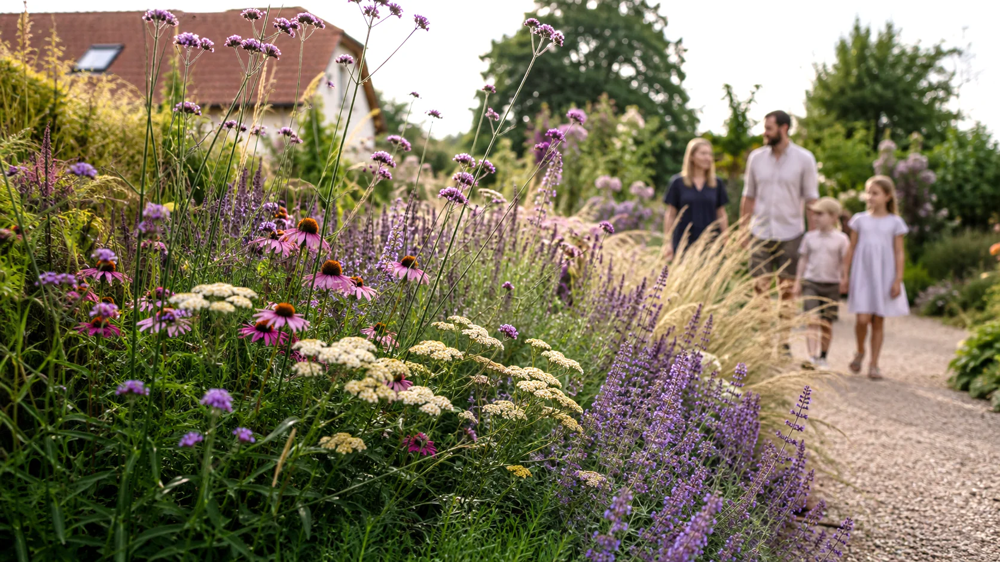
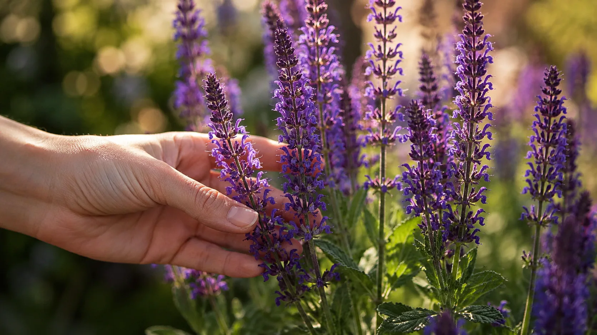

Rodinné zahradnictví
Pro zahradu, kterou si tvoříte sami.
Rostliny, zahradnické potřeby, řezané květiny a osobní poradenství.
Navštívit zahradnictví → Poptat projekt
Poptat projekt

Zahradní studio · Stará Boleslav
Navrhujeme, realizujeme a pečujeme o zahrady. Díky vlastnímu zahradnickému zázemí je vnímáme jako celek – od prostoru a materiálů až po rostliny, které se s časem proměňují.
Studio Šrámek
Studio Šrámek propojuje zahradní architekturu s rodinným zahradnictvím. Ať už chcete zahradu svěřit do našich rukou, nebo si ji tvoříte sami, vycházíme ze stejného základu – znalosti rostlin, prostoru a toho, jak zahrada žije v čase.
Rodinné zahradnictví
Rostliny, zahradnické potřeby, řezané květiny a osobní poradenství.
Navštívit zahradnictví →
Zahradní architektura
Od prvního návrhu přes realizaci až po následnou péči a další vývoj zahrady.
Prozkoumat služby →Služby
Pomáháme s jednotlivými částmi i s celou cestou ke vzniku zahrady. Od návrhu záhonu nebo rodinné zahrady přes realizaci až po dlouhodobou péči. Pracujeme také pro školy, zařízení sociální péče a další instituce.
Od jednotlivých záhonů po kompletní zahrady a veřejné prostory.
Návrh převedeme do skutečného prostoru – vlastní i od jiného architekta.
Návrh a podklady od nás, realizace ve vašich rukou.
Pravidelná i jednorázová péče podle potřeb zahrady.

01 · Služby
Dobrý návrh propojuje vaše představy s možnostmi místa. Vycházíme z architektury domu, okolí i způsobu, jakým chcete zahradu využívat. Promýšlíme prostor, materiály a výsadby s ohledem na každodenní fungování, nároky na péči i to, jak se bude zahrada v dalších letech proměňovat. Navrhujeme jednotlivé záhony, rodinné zahrady i venkovní prostory škol, zařízení sociální péče a dalších institucí.
Rozsah projektu vždy přizpůsobujeme konkrétnímu místu a tomu, co od něj potřebujete. Výsledkem jsou srozumitelné podklady pro realizaci – podle rozsahu projektu výkresy, vizualizace, osazovací plány, seznamy rostlin a specifikace materiálů.
Poznáme vaše představy a podklady a stanovíme rozsah projektu.
Poznáme místo, jeho možnosti i způsob, jakým chcete zahradu využívat.
Navrhneme základní uspořádání prostoru a společně projdeme jeho směr.
Upřesníme materiály, výsadby a jednotlivé prvky zahrady.
Předáme a vysvětlíme podklady potřebné pro realizaci.
Na návrh můžeme navázat realizací nebo vás podpořit při tvorbě zahrady svépomocí.
Cena se odvíjí od velikosti pozemku, jeho členitosti a rozsahu navrhovaných úprav. Menší, ale náročnější pozemek může rozsahem projektu odpovídat vyšší kategorii. Konkrétní nabídku připravíme po úvodní domluvě.
Promyšlená výsadba může změnit atmosféru celé zahrady. Součástí je osazovací plán se seznamem druhů a jejich počty.
Navrhujeme a realizujeme také zahrady a venkovní prostory škol, zařízení sociální péče a dalších institucí. Máme zkušenosti s projekty pro školu i domov s pečovatelskou službou. Vycházíme z potřeb lidí, kteří prostor každodenně využívají, i z možností jeho provozu a údržby.
Podle charakteru místa vytváříme prostor pro odpočinek, setkávání, hru nebo výuku venku. Návrh připravujeme v dialogu se zástupci instituce, aby odpovídal skutečnému využití a plánovanému rozpočtu. Úpravy můžeme rozdělit do etap a jejich průběh naplánovat s ohledem na chod zařízení.

02 · Služby
Zrealizujeme zahradu podle společně vytvořeného projektu a pohlídáme, aby se jeho koncepce neztratila při samotném provedení. Připravíme rozpočet, harmonogram a zajistíme dohodnuté práce, materiály i rostliny.
Realizace může proběhnout najednou nebo v několika etapách podle rozsahu projektu, vašich možností a návaznosti na další práce na pozemku.
I podle něj můžeme zahradu realizovat. Nejprve projdeme projektovou dokumentaci a pozemek, ověříme podklady potřebné pro realizaci a následně připravíme rozpočet a harmonogram. Respektujeme původní koncepci a dbáme na to, aby se při provedení zachoval charakter zahrady i navržené detaily.
Projdeme projekt, stav pozemku a domluvíme rozsah realizace.
Připravíme položkovou nabídku a případné rozdělení do etap.
Naplánujeme práce s ohledem na sezonu a připravenost pozemku.
Koordinujeme práce a hlídáme soulad s projektem i kvalitu provedení.
Hotovou zahradu společně projdeme a předáme doporučení k péči.
Pokud chcete, můžeme o zahradu dál pravidelně pečovat.
03 · Služby
Chcete se na vzniku zahrady podílet sami? Připravíme návrh a potřebné podklady, zajistíme rostliny a materiál a vysvětlíme vám, jak při realizaci postupovat. Společně vybereme práce, které zvládnete svépomocí, a ty, u kterých je lepší zapojit odborníky.
Tento způsob spolupráce se hodí zejména pro výsadby, záhony a zahrady s jednoduššími úpravami.
Ujasníme si, co chcete vytvořit a kolik práce chcete zvládnout sami.
Připravíme návrh, potřebné podklady a vysvětlíme postup.
Zajistíme rostliny a dohodnutý materiál podle návrhu.
Postupujete vlastním tempem a v případě potřeby se na nás můžete obrátit.
Poradíme, jak se o nové výsadby starat v prvních měsících i dalších sezonách.
Cena se odvíjí od rozsahu návrhu a míry podpory, kterou od nás budete potřebovat. Konkrétní nabídku připravíme po úvodní domluvě.

04 · Služby
Pečujeme o zahrady, které jsme navrhli nebo realizovali, i o ty, které vznikly bez nás. Zajistíme pravidelnou údržbu, sezónní práce i jednotlivé odborné zásahy podle aktuálního stavu zahrady.
Rozsah a četnost péče nastavíme podle potřeb výsadeb i toho, kolik práce chcete na zahradě dělat sami. Pečujeme o záhony, dřeviny, živé ploty i trávník s ohledem na roční období a dlouhodobý vývoj zahrady.

Popište nám, kde právě jste a co od zahrady potřebujete. Společně vybereme rozsah spolupráce, který vám bude dávat smysl.
Probrat váš projektProjekty
Každá vznikla z jiného místa, potřeb a představ lidí, kteří v ní žijí. Prohlédněte si vybrané realizace Studia Šrámek.
Reference
Chtěli jsme zahradu, která nebude působit nově a uměle. Výsledkem je prostor, který k domu patří, jako by tu byl odjakživa.
[Konkrétní autentická reference klienta – popis zkušenosti se spoluprací nebo výsledkem.]

[Konkrétní autentická reference klienta – popis zkušenosti se spoluprací nebo výsledkem.]

Náš přístup
Přemýšlíme o zahradě od prvního návrhu až po její další růst. Propojujeme prostor, rostliny a materiály s ohledem na místo i lidi, kteří v něm žijí. Díky vlastnímu zahradnickému zázemí víme, jak se zahrada mění v průběhu sezon i let.
Poznejte Studio Šrámek →
Rodinné zahradnictví
V našem rodinném zahradnictví ve Staré Boleslavi najdete rostliny pro zahradu i domov, zahradnické potřeby, řezané květiny a vazby na přání. A hlavně zkušenosti a osobní poradenství, o které se s vámi rádi podělíme.
Navštívit zahradnictví →
O nás
Příběh Studia Šrámek začal v roce 2008, kdy Šárka Šrámková založila rodinné zahradnictví. Vytvořila místo, kde se potkává práce s rostlinami, osobní přístup a zkušenosti, které přibývají s každou sezonou. Další součástí rodinného zázemí je autodoprava a zemní práce Jiřího Šrámka, které poskytují praktickou oporu při realizacích zahrad.
Jejich dcera Bára si našla vztah k oběma oblastem. K rostlinám a péči o ně i k práci, která dokáže proměnit podobu celého pozemku. Rozhodla se je propojit prostřednictvím zahradní architektury a dát rodinným zkušenostem nový směr. Při studiu potkala Ivanu Janichovou. Společně absolvovaly bakalářský obor Zahradní a krajinářské úpravy a navazující inženýrské studium Zahradní a krajinářské architektury.
Na společnou cestu dnes navazují ve Studiu Šrámek, kde se věnují návrhům a realizacím zahrad i jejich následné údržbě. Studio tak vyrůstá z rodinného zahradnictví a propojuje odborné vzdělání s praktickým zázemím. Znalost rostlin, zkušenosti s realizací a možnosti dopravy nám umožňují přemýšlet o zahradě v souvislostech a provázet ji od prvního návrhu až po dlouhodobou péči.

barbora@studiosramek.cz+420 731 221 662
Rostliny a zahrady jsou součástí mého života díky rodinnému zahradnictví, které založila moje máma. Blízká mi byla i tátova práce v autodopravě a kontejnerových službách. V obou oblastech jsem našla něco, co mě přitahovalo a co jsem chtěla propojit při tvorbě zahrad. Zahradní architektura mi umožnila dát tomuto vztahu směr.
Rodinné zkušenosti dnes propojuji s tím, co mi přineslo studium a vlastní praxe. Těší mě, že na ně můžu navázat a společně s Ivanou je rozvíjet ve Studiu Šrámek. Každá přinášíme svůj pohled, ale spojuje nás vztah k zahradám.
Studio vedu a věnuji se především realizacím. Starám se o přípravu, organizaci a návaznost jednotlivých prací, aby se návrh postupně proměnil ve skutečnou zahradu. Nejvíc mě těší vidět, jak prostor získává svou podobu, rostliny nacházejí své místo a zahrada se stává součástí života svých majitelů.
ivana@studiosramek.cz+420 607 680 316
Můj vztah k rostlinám začal už v dětství. Ráda vzpomínám na chvíle, kdy jsem dědovi pomáhala na zahrádce a máma mi vyprávěla, k čemu je která rostlina dobrá. Tehdy jsem ještě netušila, že se k těmto vzpomínkám jednou vrátím i ve své práci.
Při výběru střední školy jsem váhala mezi floristikou a pivovarnictvím. Vybrala jsem si pivovarnictví, ale příroda mi zůstala blízká. Na vysoké škole jsem se proto vydala cestou zahradní architektury. Díky Báře dnes můžu rozvíjet to, co ve mně klíčilo od malička, a jsem za naši spolupráci vděčná.
Ve Studiu Šrámek se věnuji především návrhům zahrad a komunikaci s klienty. Ráda poznávám jejich představy, naslouchám tomu, co je pro ně důležité, a hledám souvislosti mezi jejich přáními a možnostmi místa. Společně tak nacházíme podobu zahrady, ve které se budou cítit dobře.
FAQ
Projekt dává zahradě jasnou koncepci a vám představu o tom, jak bude vypadat a fungovat. Propojuje vaše přání s možnostmi pozemku a řeší návaznost prostoru, materiálů a výsadeb. Slouží také jako podklad pro rozpočet a realizaci. Pomáhá předcházet zbytečným úpravám během prací a umožňuje zahradu tvořit po etapách se zachováním celkové myšlenky.
Orientační cena projektu malé zahrady do 300 m² je 20 000–35 000 Kč, u střední zahrady o rozloze 300–800 m² se pohybuje mezi 35 000–50 000 Kč. U větších nebo komplikovaných zahrad cenu stanovujeme individuálně. Záleží také na členitosti pozemku a rozsahu úprav, proto může být i menší zahrada náročnější na zpracování. Konkrétní nabídku připravíme podle podkladů a společné domluvy.
Návrh zahrnuje celkovou koncepci a uspořádání prostoru, výběr materiálů a rostlin i vizualizace budoucí zahrady. Doplňují ho technické výkresy, osazovací plány, seznam rostlin, výkaz výměr a technická zpráva. Konkrétní rozsah podkladů domlouváme podle potřeb projektu, aby sloužily jako srozumitelný základ pro realizaci.
Cena vychází z odsouhlaseného projektu. Ovlivňuje ji rozsah prací, terén, přístup na pozemek, zvolené materiály i velikost rostlin. O rozpočtu mluvíme už při návrhu, abychom mu mohly přizpůsobit řešení. Před zahájením realizace připravíme položkovou cenovou nabídku. Je-li to proveditelné, práce můžeme rozdělit také do etap podle vašich možností.
Délka realizace závisí na rozsahu prací, připravenosti pozemku a dostupnosti materiálů a rostlin. Termín ovlivňuje také počasí a vhodné období pro výsadbu. Před zahájením s vámi domluvíme předpokládaný harmonogram a během prací vás informujeme o jejich průběhu. Pokud zahradu tvoříme po etapách, naplánujeme je tak, aby na sebe navazovaly.
Ano. Nejprve projdeme projektovou dokumentaci a seznámíme se s pozemkem. Ověříme, zda máme potřebné podklady pro rozpočet a provedení prací. Případné nejasnosti s vámi probereme a podle potřeby je konzultujeme s autorem návrhu. Při realizaci respektujeme původní koncepci zahrady.
Ano, věnujeme se celým zahradám, jejich jednotlivým částem i samostatným záhonům. U stávajících zahrad hledáme, na co můžeme navázat a co má smysl zachovat. Úpravy navrhujeme s ohledem na současnou podobu místa, vaše představy a plánovaný rozpočet.
Ano. Připravíme návrh, osazovací plán a přehled potřebných rostlin a materiálů. Vysvětlíme vám postup prací a můžeme zajistit také rostliny a dohodnutý materiál. Společně posoudíme, co zvládnete sami a kde bude vhodná odborná pomoc. Tato spolupráce se hodí zejména pro výsadby záhonů a jednodušší úpravy zahrad.
Nenašli jste odpověď na svou otázku? Napište nám na info@studiosramek.cz.

Ať už začínáte s prázdným pozemkem, nebo chcete proměnit zahradu, která už nějakou dobu žije, napište nám.
Poptat projekt →Kontakt
Plánujete novou zahradu nebo úpravu té stávající? Napište nám, kde se nachází a co byste v ní chtěli vytvořit. Rády se s vámi potkáme, vyslechneme vaše představy a navrhneme další postup.
V sezóně nemusíme být stále na telefonu ani u e-mailu. Ozveme se vám hned, jak to bude možné.
Navrhujeme, realizujeme a pečujeme o zahrady. Propojujeme architekturu, rostliny a materiály s ohledem na místo a lidi, kteří v něm žijí. Opíráme se o zahradnické zázemí a zkušenosti, které nám umožňují přemýšlet o zahradě od prvního návrhu až po její další růst.
Promýšlíme prostor, výsadby i jednotlivé detaily. Zajímá nás propojení zahrady s domem, její atmosféra i rovnováha mezi otevřeným prostorem a soukromím. Pracujeme s proměnami rostlin během roku a myslíme na jejich další růst. Návrhem, realizací i následnou péčí rozvíjíme charakter zahrady, aby s časem dorostla do své zamýšlené podoby.